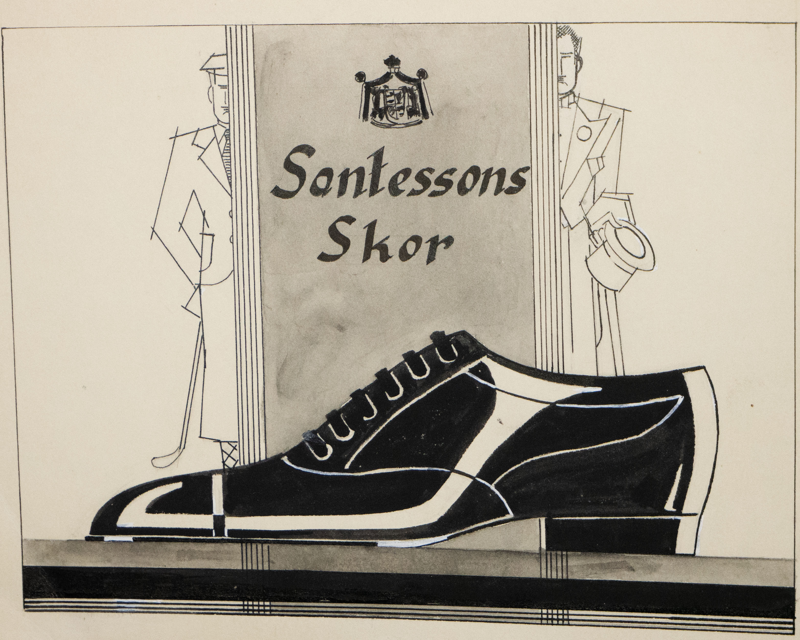

K.D. Santessons skofabrik
Skisserna av skomodeller som visas på hemsidan kommer från K.D. Santessons skofabrik. Fabriken grundades av smålänningen Kristian David Santesson. I ett skomakeri vid Stora torg i Eslöv fick han först anställning som skomakargesäll hos Nils Peter Nilsson. Via giftermål med dennes dotter Kristina blev han 9 maj 1900 delägare i företaget. Både Kristian David och hans son Gustaf David har designat skor; de förstod sig på ekonomi och marknadsföring men behärskade även det praktiska och kreativa hantverket.
Tillverkningen växte, och i januari 1925 öppnade en fabrik med tillbyggnad på tre våningar vid hörnet Kanalgatan och Vasagatan i Eslöv. Där hade man som mest ett 60-tal anställda. Skorna var handsydda, bestod av bästa skinnkvalitet och åtnjöt ett mycket gott rykte, och slutligen blev K.D. Santessons skofabrik kungliga hovleverantörer. Kung Gustav V, Gustav VI Adolf samt drottning Louise var kungligheter man levererade till.
Alla skor som togs fram tillverkades för hand i storlek 36 till en provkollektion. Därefter fick skobutikerna beställa så många storlekar av varje modell som de önskade. I en katalog från 1909 har man hittat 1 700 olika modeller av exklusiva skor. Det dyraste paret kostade 14,56 kronor, vilket var en ansenlig summa på den tiden.
År 1956 lades företaget ner på grund av krisen inom tekoindustrin i Sverige. Maskinerna såldes som skrot, och restpartier av skor såldes ut. Många kunder eftersökte de sista paren då man inom den exklusiva kundkretsen inte kunde acceptera de masstillverkade, ofta utländska skorna.
Lådor med skor som använts vid visningar, verktyg, skoläster, kvitton och skisser förvarades under flera års tid på en vind i Malmö. Dessa har slutligen donerats till Eslöfs museiförening av K.D. Santessons barnbarn, Bengt Santesson. Eslövs stadsmuseum har en permanent basutställning (Eslövsresan) där vidare information kring Eslövs sko- och industrihistoria finns.
Vidare information hittar du här:
Annons från Santessons skor ur tidskriften Scenen från 1928
Samt ett antal tidningsartiklar:
Olsson, E. (2009, 14 mars). Många gatunamn finns att välja på, Skånska Dagbladet.
Olsson, E. (2008, 3 maj). Santessons skofabrik höll hög kvalitet på sina produkter-blev också hovleverantör, Skånska Dagbladet.
Frennstedt, T. (1969, 24 mars). Då var “gurkstaden” en “skostad” som tillverkade FÖTTERNAS ROLLS ROYCE, (Okänd tidning).